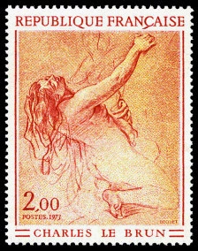
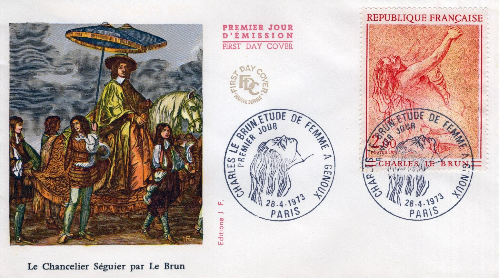
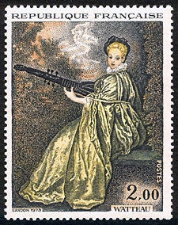
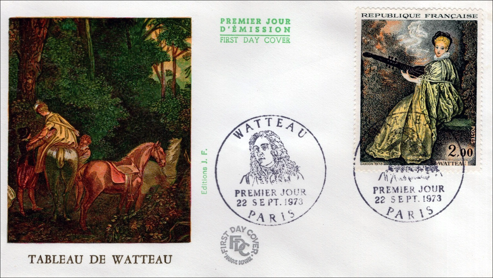
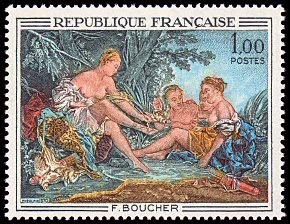
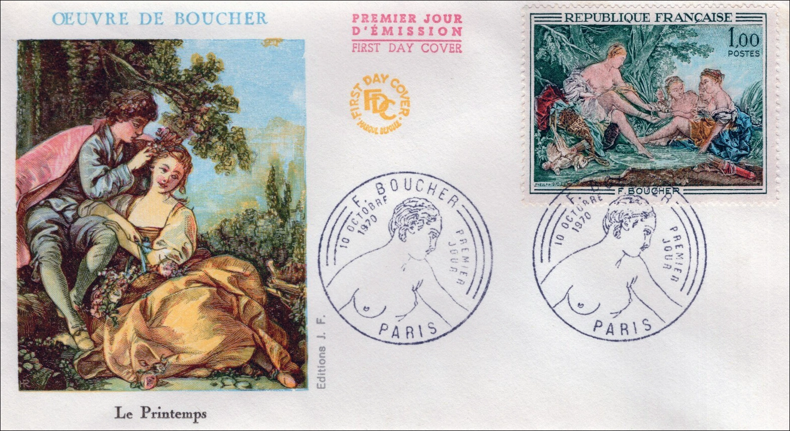
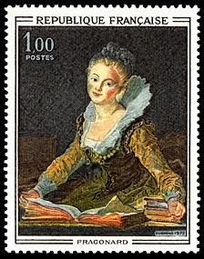
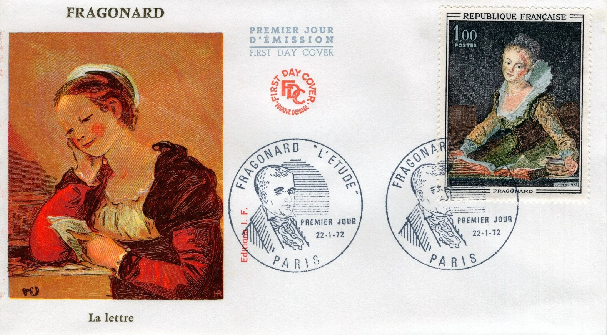
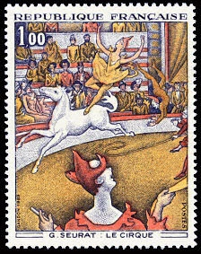
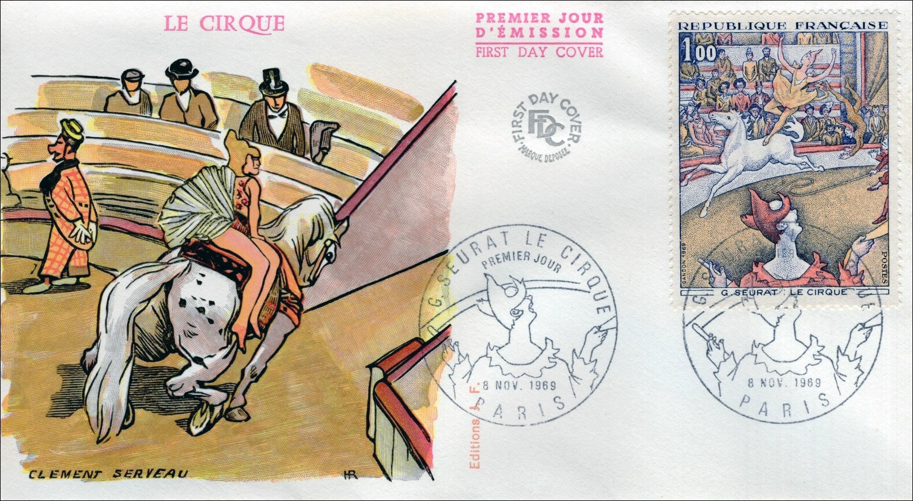

France – Le Musée imaginaire on Stamps
Five painters, five stamps and five first-day covers
France’s long-running programme of art stamps, inaugurated in 1961, brought works of art into everyday correspondence. The idea of a musée imaginaire (imaginary museum), associated with André Malraux, offers a fitting way to understand this miniature gallery: reproductions allow works separated by time and place to be viewed together. This selection of five issues from 1969 to 1973 is not a complete catalogue of the French art series. Each stamp is accompanied by a first-day cover (FDC), whose illustration and special cancellation enrich the encounter with the artist.
Charles Le Brun · Antoine Watteau · François Boucher · Jean-Honoré Fragonard · Georges Seurat
Charles Le Brun 1619–1690

The leading painter of Louis XIV’s reign, Le Brun directed the Gobelins manufactory and played a central role in the decoration of Versailles. His compositions combine classical order with expressive gestures and the grandeur of royal patronage.
The stamp reproduces a figure study in red chalk. The cover adds a contrasting image of the Chancellor Séguier, a celebrated example of Le Brun’s ceremonial portraiture.

Antoine Watteau 1684–1721

Watteau transformed French painting with his fêtes galantes: elegant gatherings in imaginary parklands, where music, theatre and fleeting encounters create a mood of delicate melancholy. His art helped prepare the way for the Rococo.
The stamp shows an elegantly dressed musician holding a stringed instrument. The cover extends the theatrical atmosphere with a wooded scene.

François Boucher 1703–1770

A master of the Rococo, Boucher painted pastoral idylls, mythological scenes and decorative compositions. Supported by Madame de Pompadour, he became first painter to Louis XV in 1765. His light palette and graceful figures epitomize the cultivated taste of the period.
The stamp presents a mythological scene with reclining figures and children. The cover illustration, labelled Le Printemps, offers another example of his pastoral imagination.

Jean-Honoré Fragonard 1732–1806

Fragonard studied with Boucher and developed a remarkably spontaneous brushwork. His intimate scenes, portraits and playful narratives capture the energy and elegance of late Rococo painting.
The stamp depicts a richly dressed woman with a book. The cover reproduces another intimate scene, labelled La lettre, emphasizing the artist’s interest in private moments.

Georges Seurat 1859–1891

Seurat pioneered Neo-Impressionism, organizing small touches of colour into carefully structured compositions. His systematic exploration of optical colour contrasts with the fluid brushwork of the eighteenth-century painters.
The stamp reproduces Le Cirque, his unfinished final major painting of 1890–1891. The cover adds a circus illustration credited to Georges Gandon, echoing the lively subject of the stamp.

From royal grandeur to modern colour
Seen together, these five issues trace a remarkable evolution: the ceremonial art of Le Brun, the poetic world of Watteau, the decorative elegance of Boucher and Fragonard, and finally Seurat’s disciplined exploration of colour. The stamps and covers create a dialogue between painting, engraving and postal history.
Further reading: The French Art Stamp Series · Le Musée imaginaire – Stamps and Maximum Cards
Published November 27, 2026 · Victor Manta, USA.